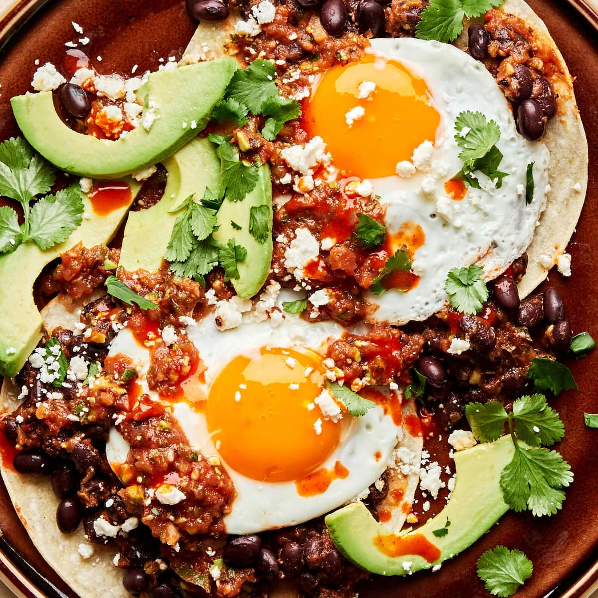

Huevos Rancheros (Mexico)

Description
Huevos Rancheros is a traditional Mexican breakfast dish that consists of
fried eggs served on lightly fried corn tortillas, topped with a
tomato-chili sauce. It is often accompanied by refried beans,
Mexican-style rice, and slices of avocado or guacamole. The dish is a
hearty and flavorful meal that showcases the staples of Mexican cuisine:
corn, beans, and chiles.
Some ingredients
Corn tortillas
Eggs
Tomatoes
Chiles (such as jalapeños or serranos)
Onions
Garlic
Refried beans
Avocado or guacamole
Salt and pepper
Steps to make Huevos Rancheros
- Make Sauce: Cook chopped tomatoes, onions, and chiles until soft.
- Cook Tortillas: Lightly fry corn tortillas.
- Fry Eggs: Cook eggs sunny-side up.
-
Assemble: Place eggs on tortillas and top with sauce. Serve with beans
and avocado.